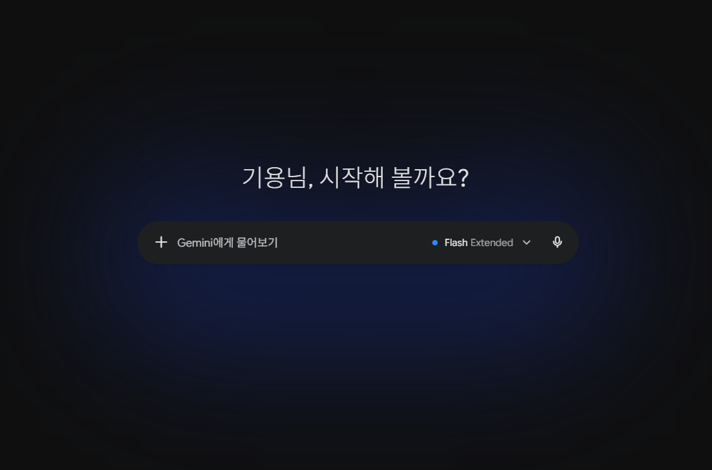
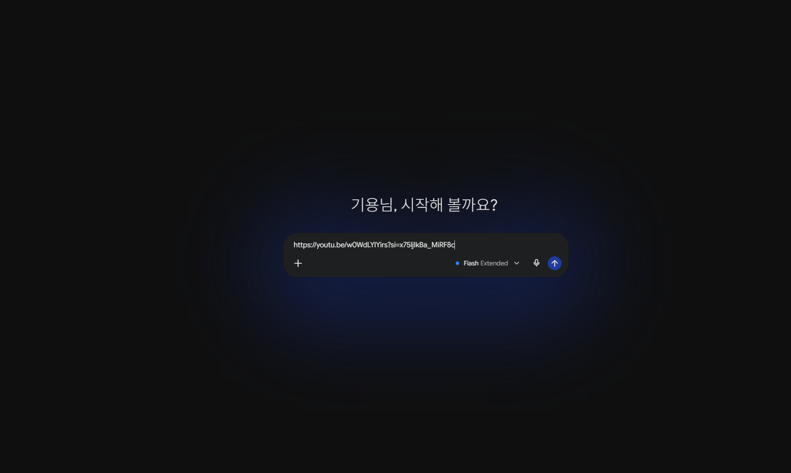
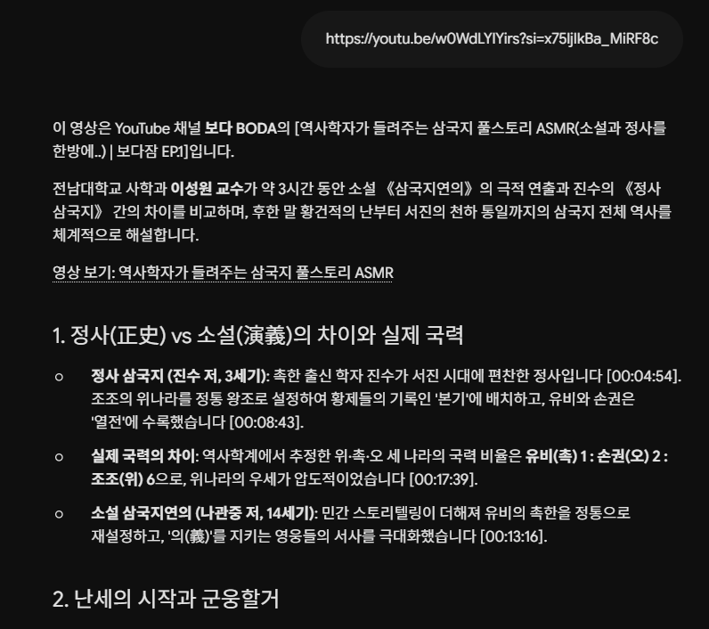
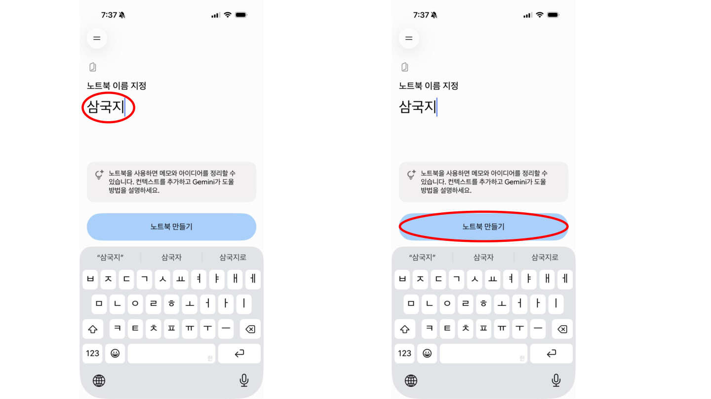
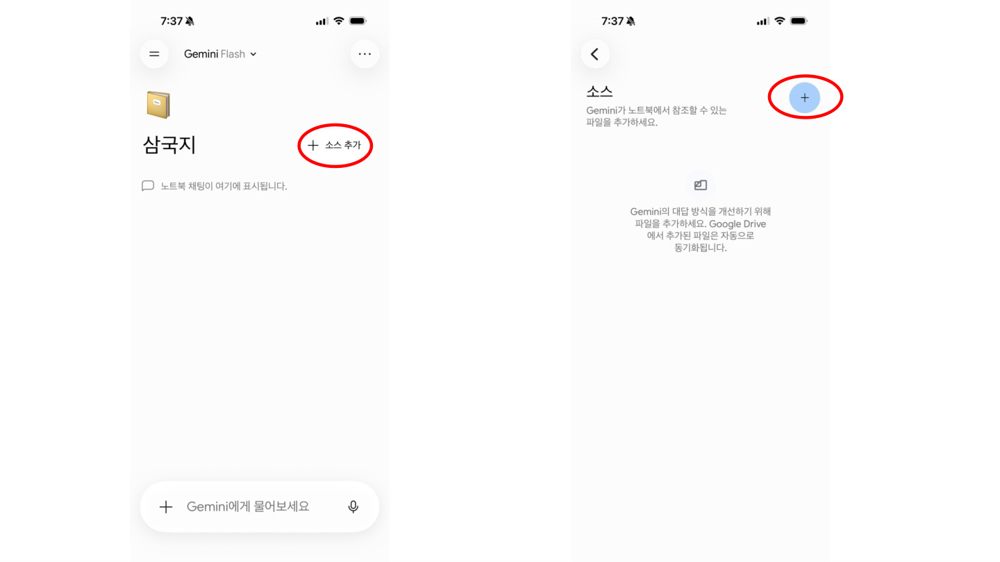
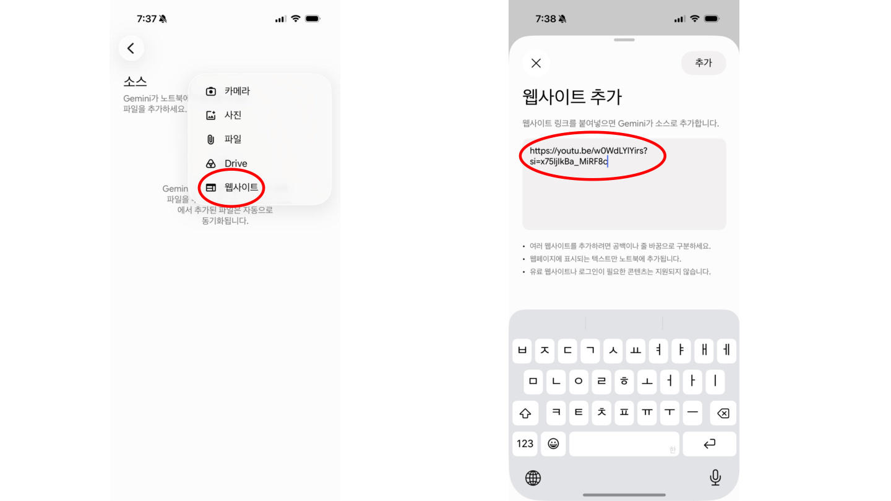
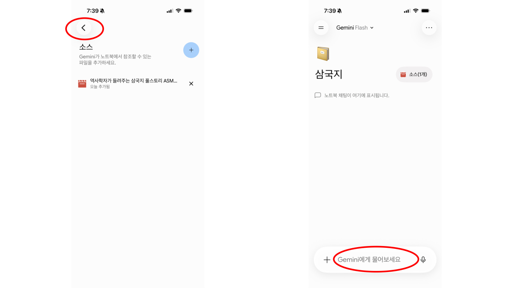
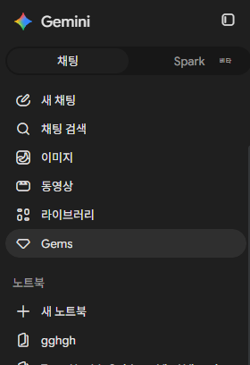

0. 수업 목표
오늘은 긴 YouTube 영상을 Gemini로 쉽게 요약하고, Notebook에 모아 나만의 지식창고를 만든 뒤, 내 사진의 배경과 문구를 바꿔보는 실습을 진행합니다.
Gemini 링크 요약삼국지 지식창고사진 배경 변경날짜·문구 넣기
1. 오늘 만들 결과물
수업이 끝나면 “삼국지 영상 요약 카드”, “나의 삼국지 지식창고”, “배경과 문구가 바뀐 내 사진”을 남깁니다. 하나만 완성해도 성공입니다.
2. Gemini에서 영상 링크 넣기
Gemini 첫 화면에서 YouTube 링크를 붙여넣고, 원하는 요약 형식을 함께 요청합니다.


실습 프롬프트
Gemini가 영상을 직접 읽지 못하면 영상 제목, 설명, 자막, 내가 본 내용을 함께 붙여넣고 “실제 영상을 본 것처럼 단정하지 말고 정리해줘”라고 요청합니다.
3. 요약 결과 확인하기
Gemini가 만든 요약은 “완성본”이 아니라 “첫 초안”입니다. 핵심 흐름을 보고 필요한 형식으로 다시 다듬습니다.

다시 다듬는 프롬프트
4. Notebook 지식창고 만들기
영상 요약을 그냥 지나치지 않고 Notebook에 모아두면, 나중에 다시 질문할 수 있는 개인 자료함이 됩니다.

이름을 `삼국지`로 지정
새 Notebook을 만들고 수업에서 계속 찾기 쉽도록 제목을 먼저 정합니다.

`소스 추가` 선택
Notebook이 참고할 자료를 넣기 위해 소스 추가 버튼을 누릅니다.

`웹사이트`에 YouTube 링크 입력
복사한 YouTube 주소를 웹사이트 입력칸에 붙여넣어 영상 자료를 연결합니다.

뒤로 돌아와 Gemini에게 질문
소스를 넣은 뒤 다시 채팅 화면으로 돌아와 삼국지 내용을 쉽게 설명해 달라고 묻습니다.
Notebook에 넣을 내용
Notebook 접속이나 로그인이 어렵다면 휴대폰 메모장, Google Docs, 카카오톡 나에게 보내기로 대체해도 됩니다.
5. 지식창고에 다시 물어보기
Notebook에 자료를 넣은 뒤에는 “삼국지 공부 노트”처럼 다시 질문하며 내용을 쉽게 바꿔볼 수 있습니다.
실습 프롬프트
6. 내 사진 준비와 업로드
사진 편집은 재미있지만 개인정보가 될 수 있습니다. 본인 사진을 쓰고, 공개해도 괜찮은 사진인지 먼저 확인합니다.

사진 선택 기준
- 얼굴과 상반신이 너무 작지 않은 사진
- 다른 사람 얼굴, 손주 사진, 주소·차량번호가 보이지 않는 사진
- 집 앞, 병원, 금융기관처럼 민감한 장소가 드러나지 않는 사진
- 단체방이나 SNS에 올리기 전 다시 확인할 수 있는 사진
AI 도구에 올린 사진은 서비스에 따라 저장되거나 학습에 사용될 수 있으니 민감한 사진은 올리지 않습니다. 수업 중 공유도 강요하지 않습니다.
7. Gemini로 배경과 문구 바꾸기
핵심은 “사람은 그대로, 배경만 변경”입니다. 문구와 날짜는 AI가 한글을 틀릴 수 있으므로 필요하면 스마트폰 사진 편집 기능으로 넣습니다.
기본 실습 프롬프트
문구와 날짜 넣기
한글이 깨지거나 틀리면 괜찮습니다. 그럴 때는 AI로 배경만 바꾸고, 글씨는 스마트폰 갤러리·카카오톡 편집·Canva 등으로 직접 넣습니다.
8. 비교·저장·마무리
AI 결과는 첫 답이 완성이 아니라, 내가 다시 요청하며 다듬는 초안입니다. 저장하기 전 원본과 비교합니다.